งานจิตอาสาทั้งหมด เพื่อสังคมและธรรมชาติ
เลือกโครงการที่ตรงกับความชอบของคุณ ไม่ว่าจะเป็นงานอนุรักษ์สิ่งแวดล้อม สอนหนังสือน้องๆ หรือช่วยเหลือชุมชน
 25 ต.ค. พ.ศ.2569
25 ต.ค. พ.ศ.2569
จิตอาสาทำสมุดทำมือจากกระดาษรีไซเคิลให้น้อง ๆ ด้อยโอกาส
ร่วมทำสมุดจากกระดาษเหลือใช้ ที่นำกลับมารีไซเคิลให้เป็นสมุดที่พร้อมใช้งานอีกครั้ง เพื่อนำไปบริจาคต่อให้กับน้อง ๆ ที่ขาดแคลนทุนทรัพย์ หรือน้อง ๆ ที่อยู่ตามถิ่นทุรกันดารทั่วประเทศ
 28 ต.ค. พ.ศ.2569
28 ต.ค. พ.ศ.2569
โครงการมื้ออาหารกลางวัน เพื่อเด็ก
จิตอาสาไปร่วมกันช่วยทำมื้ออาหารกลางวันให้แก่เด็ก ๆ เพื่อช่วยในเรื่องของโภชนาการของน้อง ๆ ในวัยเรียนและยังเป็นการช่วยลดค่าใช้จ่ายในครัวเรือนให้แก่ครอบครัวของเด็ก ๆ
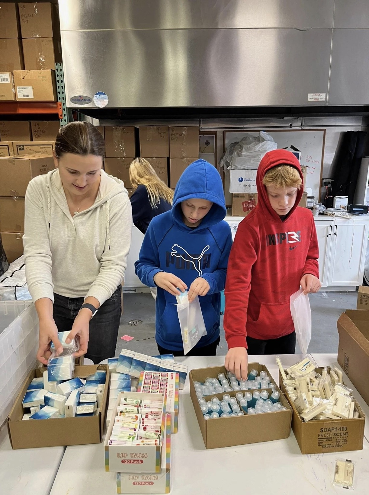
20 ต.ค. พ.ศ.2569จิตอาสาจัดชุดสุขอนามัยแบ่งปันให้ผู้ยากไร้
รวบรวมสบู่ แปรงสีฟัน ยาสีฟัน และของใช้จำเป็นที่ยังไม่เปิดใช้ นำมาจัดเป็นชุดเพื่อบริจาคให้ผู้ที่ขาดแคลนและครอบครัวที่ต้องการความช่วยเหลือ
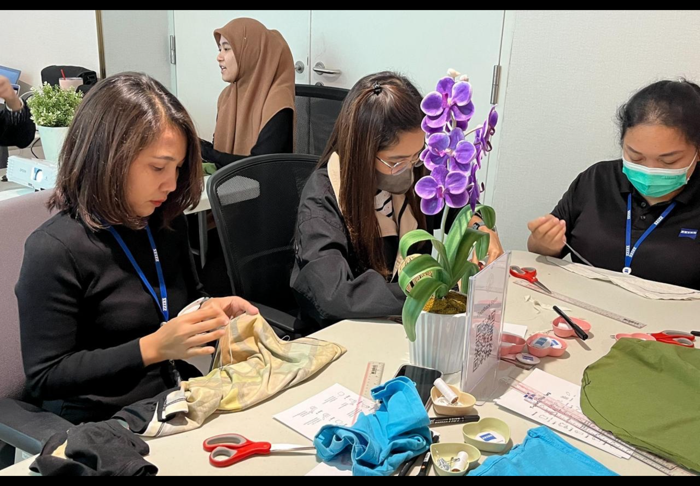
30 ต.ค. พ.ศ.2569จิตอาสาทำถุงผ้าจากเสื้อผ้าเก่าเพื่อผู้ขาดแคลน
นำเสื้อผ้าที่ไม่ใช้แล้วแต่ยังมีสภาพดีมาประดิษฐ์เป็นถุงผ้า เพื่อนำไปมอบให้ผู้สูงอายุ ผู้ป่วย และประชาชนที่ต้องการความช่วยเหลือ พร้อมส่งเสริมการลดใช้ถุงพลาสติก
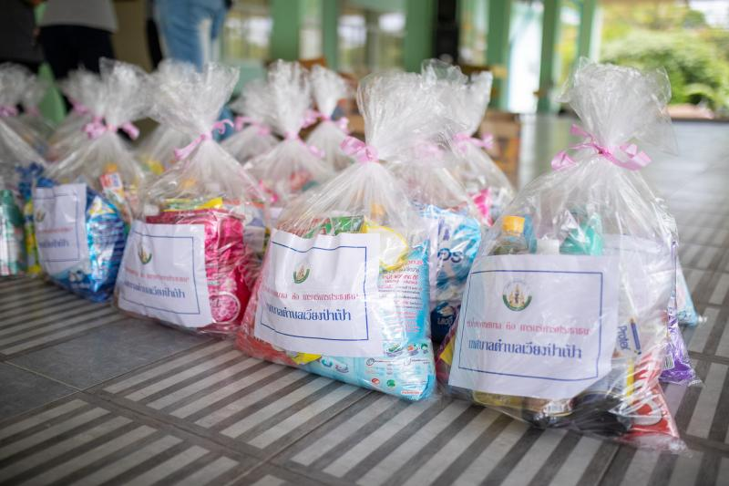
28 พ.ย. พ.ศ.2569จิตอาสาจัดถุงยังชีพแบ่งปันให้ครอบครัวผู้ยากไร้
ร่วมจัดเตรียมข้าวสาร อาหารแห้ง และสิ่งของจำเป็นลงในถุงยังชีพ เพื่อส่งมอบให้ครอบครัวที่ประสบปัญหาทางเศรษฐกิจหรือได้รับผลกระทบจากภัยพิบัติผ่านหน่วยงานในพื้นที่
 21 พ.ย. พ.ศ.2569
21 พ.ย. พ.ศ.2569
จิตอาสาพี่สอนน้อง อ่านนิทานสร้างจินตนาการ
ร่วมจัดกิจกรรมอ่านนิทาน สอนการบ้าน และทำกิจกรรมศิลปะร่วมกับเด็ก ๆ เพื่อส่งเสริมทักษะการอ่าน ความคิดสร้างสรรค์ และพัฒนาการทางสังคม
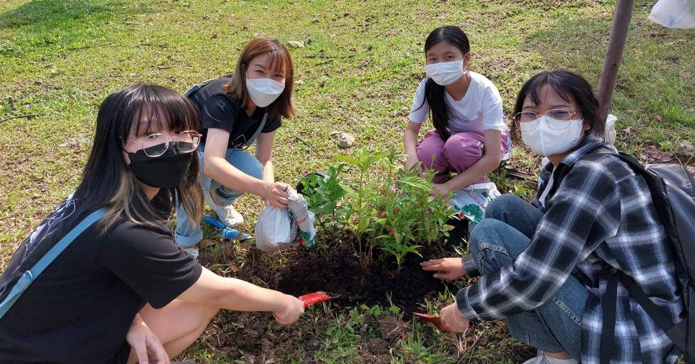
23 พ.ย. พ.ศ.2569จิตอาสาปลูกต้นไม้เพิ่มพื้นที่สีเขียวให้ชุมชน
ร่วมกันปลูกต้นไม้และดูแลพื้นที่สีเขียวในชุมชน เพื่อเพิ่มความร่มรื่น ลดปัญหาสิ่งแวดล้อม และสร้างจิตสำนึกในการอนุรักษ์ธรรมชาติ
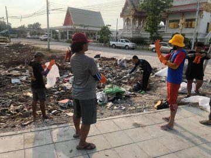
14 พ.ย. พ.ศ.2569จิตอาสาเก็บขยะและทำความสะอาดชุมชน
ร่วมเก็บขยะในพื้นที่สาธารณะ แยกขยะรีไซเคิลออกจากขยะทั่วไป และทำความสะอาดบริเวณโดยรอบ เพื่อสร้างสภาพแวดล้อมที่สะอาดและน่าอยู่
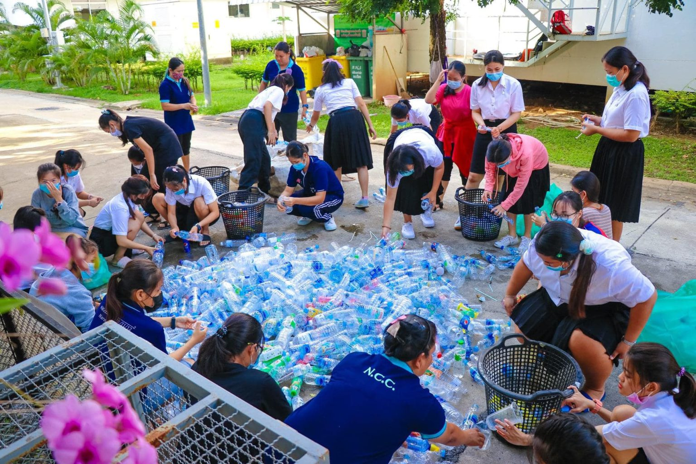
22 พ.ย. พ.ศ.2569จิตอาสาคัดแยกขยะสร้างประโยชน์เพื่อสังคม
ร่วมคัดแยกขวดพลาสติก กระดาษ และวัสดุรีไซเคิล เพื่อนำส่งเข้าสู่กระบวนการรีไซเคิลอย่างเหมาะสม พร้อมให้ความรู้เรื่องการจัดการขยะในชีวิตประจำวัน
 1 พ.ย. พ.ศ.2569
1 พ.ย. พ.ศ.2569
จิตอาสาจัดชุดอุปกรณ์การเรียนเพื่อน้อง
รวบรวมดินสอ ยางลบ ไม้บรรทัด สมุด และอุปกรณ์การเรียนที่จำเป็น นำมาจัดเป็นชุดเพื่อบริจาคให้เด็กนักเรียนที่ขาดแคลนทุนทรัพย์
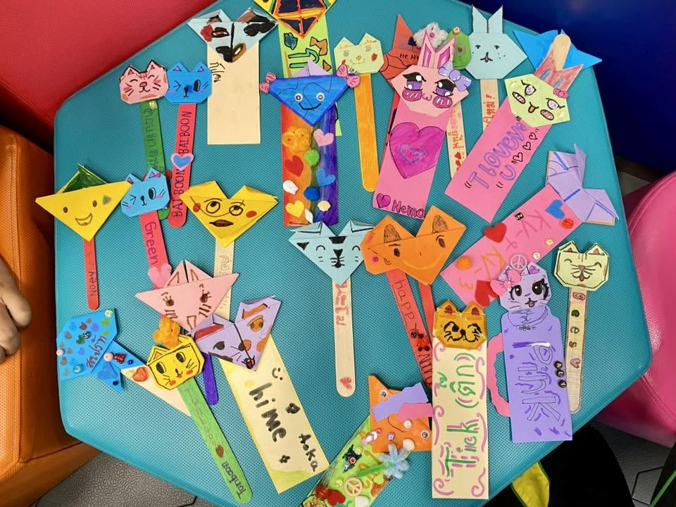
29 พ.ย. พ.ศ.2569จิตอาสาประดิษฐ์ที่คั่นหนังสือจากกระดาษเหลือใช้
นำเศษกระดาษ ลัง และวัสดุเหลือใช้มาประดิษฐ์และออกแบบเป็นที่คั่นหนังสือน่ารัก ๆ เพื่อส่งมอบให้ห้องสมุดชุมชนและโรงเรียนที่ขาดแคลน
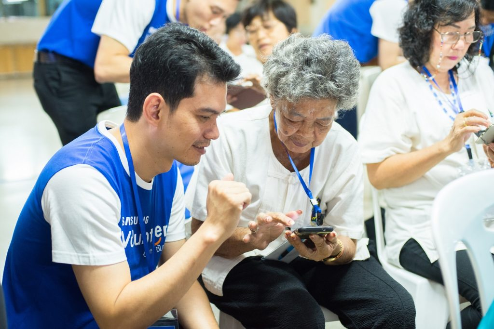
26 ธ.ค. พ.ศ.2569กิจกรรมอาสาสอนผู้สูงอายุใช้สมาร์ทโฟน
อาสาสมัครช่วยสอนผู้สูงอายุใช้โทรศัพท์มือถือเบื้องต้น เช่น การโทรออก การส่งข้อความ การใช้วิดีโอคอล และการระวังมิจฉาชีพออนไลน์
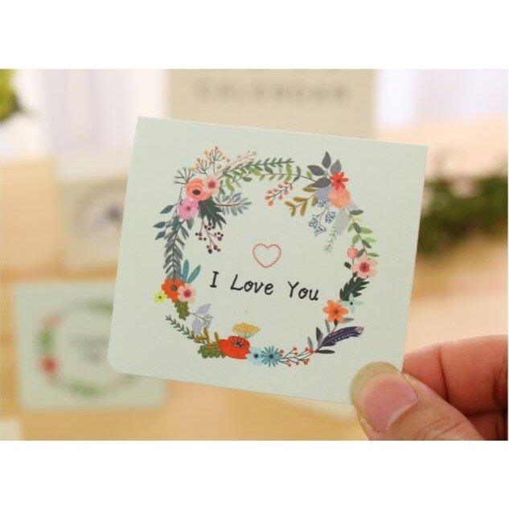
5 ธ.ค. พ.ศ.2569จิตอาสาประดิษฐ์งานศิลปะส่งกำลังใจให้ผู้ป่วย
ร่วมกันทำการ์ดอวยพรและงานประดิษฐ์จากกระดาษ เพื่อนำไปมอบให้ผู้ป่วยในโรงพยาบาล เพื่อสร้างกำลังใจและส่งต่อความห่วงใยให้แก่ผู้รับ
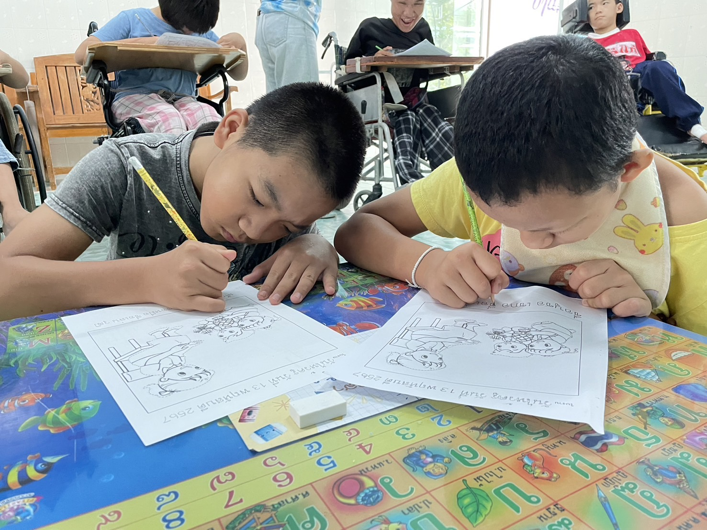
23 ธ.ค. พ.ศ.2569โครงการจิตอาสาวาดภาพการ์ตูนนิทานช่วยพัฒนาเยาวชน
ร่วมกันส่งเสริมการเรียนรู้ จินตนาการ และคุณธรรมจริยธรรมของเด็กและเยาวชน ผ่านสื่อการ์ตูนนิทานสร้างสรรค์ เพื่อนำไปมอบเป็นสื่อการเรียนรู้ให้กับน้องๆ ในพื้นที่ขาดแคลน
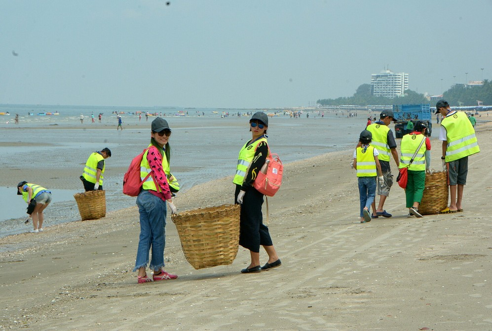
18 ม.ค. พ.ศ.2570โครงการจิตอาสาเก็บขยะชายหาดจังหวัดชลบุรี
ร่วมกันฟื้นฟูและอนุรักษ์สิ่งแวดล้อมทางทะเล ปกป้องระบบนิเวศชายฝั่ง และคัดแยกขยะเพื่อการนำกลับมาใช้ใหม่ เพราะทะเลที่สวยงามเริ่มต้นได้จากมือของเราทุกคน
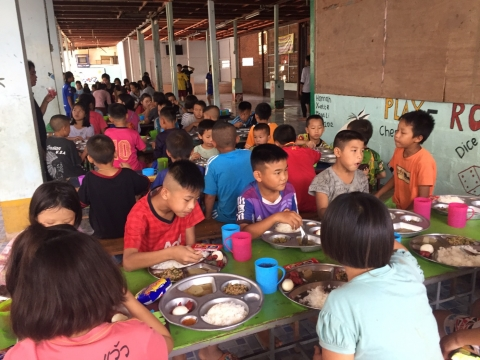
18 ธ.ค. พ.ศ.2569โครงการมื้ออาหารกลางวันเพื่อเด็กด้อยโอกาส
ร่วมเป็นส่วนหนึ่งในการส่งมอบมื้ออาหารที่มีประโยชน์และถูกหลักโภชนาการ ให้กับน้องๆ ในพื้นที่ขาดแคลน มอบพลัง สุขภาพที่ดี และโอกาสในการเรียนรู้เพื่ออนาคตของเด็กทุกคน
โครงการจิตอาสาแบ่งปันเพื่อการเปลี่ยนแปลง
ร่วมเปลี่ยนเสื้อผ้าและของใช้สภาพดีให้กลายเป็นความช่วยเหลือที่ยิ่งใหญ่ ส่งมอบความอบอุ่นและเครื่องนุ่งห่มไปยังผู้ประสบภัยและผู้ขาดแคลนในพื้นที่ห่างไกลกันดาร
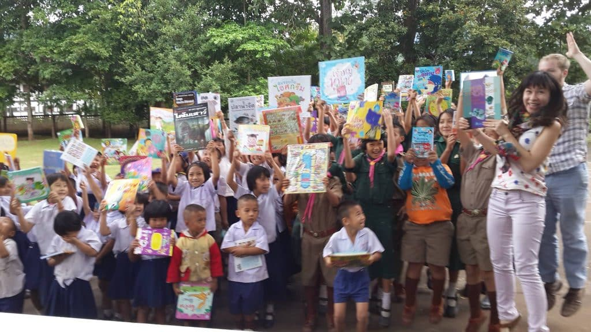
15 ก.พ. พ.ศ.2570โครงการจิตอาสาคัดแยกหนังสือส่งต่อให้น้องในพื้นที่ห่างไกล
รวบรวม ตรวจสอบ และคัดแยกหนังสือที่มีคุณภาพ นำไปส่งมอบเป็นสื่อการเรียนรู้ให้แก่โรงเรียน ชุมชน หรือศูนย์การเรียนรู้ในพื้นที่ห่างไกล เพื่อส่งเสริมโอกาสทางการศึกษาและปลูกฝังนิสัยรักการอ่าน